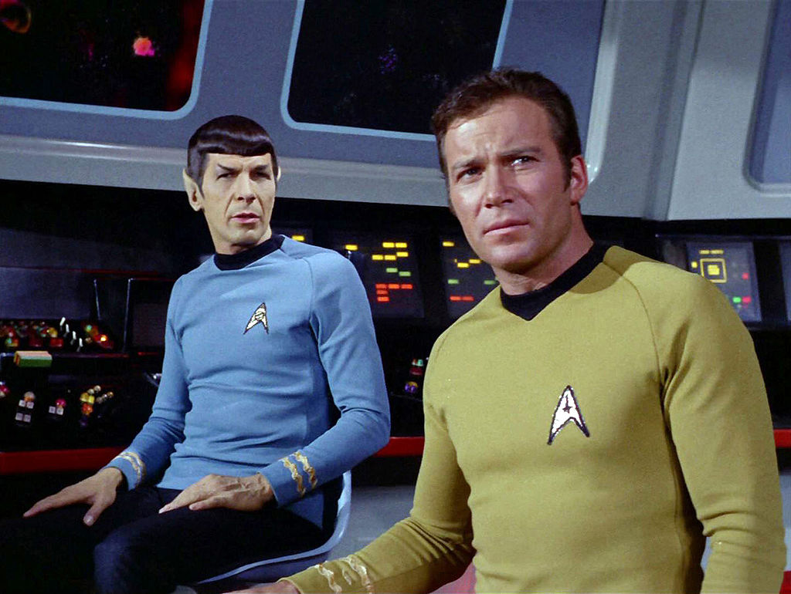
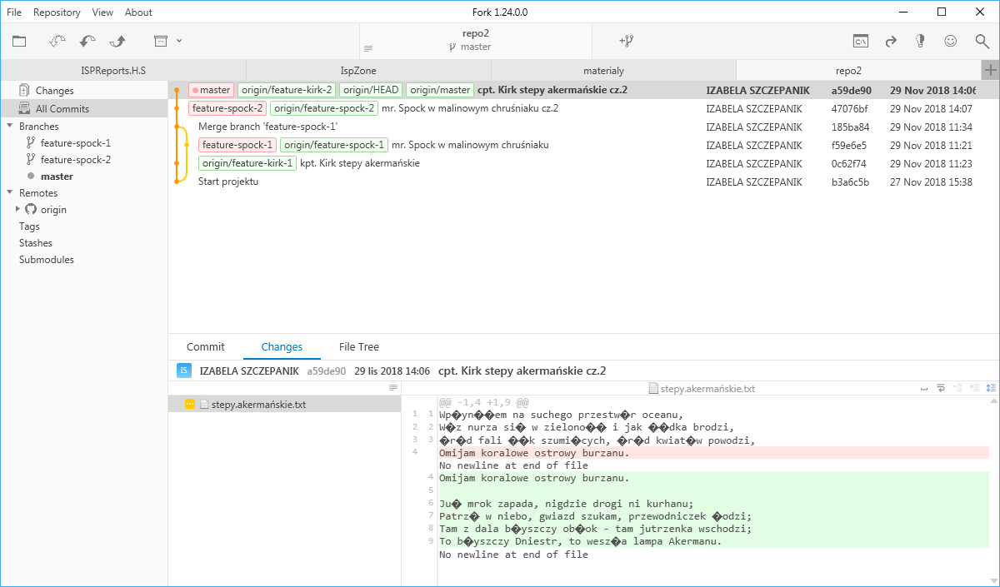

Wraz ze współpracownikami z zespołu postanowiliście zacząć stosować ribejz przed merdżowaniem branczy, żeby zapewnić czytelność repozytorium, uniknąć rozwiązywania konfliktów na głównym branczu.
Użyjcie repozytorium z poprzedniego ćwiczenia kapitana Kirka.
Captain Kirk
Stwórz brancz feature-kirk-2.
$ git checkout -b feature-kirk-2Do pliku stepy.akermanskie.txt dodaj następną zwrotkę:
Już mrok zapada, nigdzie drogi ni kurhanu;
Patrzę w niebo, gwiazd szukam, przewodniczek łodzi;
Tam z dala błyszczy obłok - tam jutrzenka wschodzi;
To błyszczy Dniestr, to weszła lampa Akermanu.
Zapisz zmiany, zakomituj i pusznij zmiany na brancz zdalny. Przełącznik -u jest konieczny, ponieważ to nowy bracz, którego nie ma jeszcze na zdalnym repozytorium.
$ git add .
$ git commit -m "cpt. Kirk stepy akermanskie cz.2"
$ git push -u origin feature-kirk-2Mr. Spock
Stwórz brancz feature-spock-2.
$ git checkout -b feature-spock-2Do pliku w.malinowym.chruśniaku.txt dodaj następną zwrotkę:
Bąk złośnik huczał basem, jakby straszył kwiaty,
Rdzawe guzy na słońcu wygrzewał liść chory,
Złachmaniałych pajęczyn skrzyły się wisiory,
I szedł tyłem na grzbiecie jakiś żuk kosmaty.
Zapisz zmiany, zakomituj i pusznij zmiany na brancz zdalny. Przełącznik -u jest konieczny, ponieważ to nowy bracz, którego nie ma jeszcze na zdalnym repozytorium.
$ git add .
$ git commit -m "mr. Spock w malinowym chruśniaku cz.2"
$ git push -u origin feature-spock-2Pobierz wszystkie zmiany ze zdalnego repozytorium. Czas na code review zmian Spocka.
$ git fetch originremote: Enumerating objects: 4, done.
remote: Counting objects: 100% (4/4), done.
remote: Compressing objects: 100% (3/3), done.
remote: Total 3 (delta 0), reused 3 (delta 0), pack-reused 0
Unpacking objects: 100% (3/3), done.
From github.com:grazin/repo2
* [new branch] feature-spock-2 -> origin/feature-spock-2Pobierz wszystkie zmiany ze zdalnego repozytorium. Czas na code review zmian Kirka.
$ git fetch originremote: Enumerating objects: 4, done.
remote: Counting objects: 100% (4/4), done.
remote: Compressing objects: 100% (3/3), done.
remote: Total 3 (delta 0), reused 3 (delta 0), pack-reused 0
Unpacking objects: 100% (3/3), done.
From github.com:grazin/repo2
* [new branch] feature-kirk-2 -> origin/feature-kirk-2Przejdź na brancz Spocka feature-spock-2. Przejrzyj zmiany w dowolnym GUI.
$ git checkout feature-spock-2Przejdź na brancz Kirka feature-kirk-2. Przejrzyj zmiany w dowolnym GUI.
$ git checkout feature-kirk-2Jeśli Kirk zatwierdził twoje zmiany (ustnie wyraził zadowolenie z Twoich zmian), wróc na swój brancz, żeby następnie zribejzować go i potem go domerdżować do brancza głównego. Zribejzuj swój brancz względem głównego i pusznij.
$ git checkout feature-spock-2
$ git rebase masterCurrent branch feature-spock-2 is up to date.W tym wypadku git zwraca komunikat o tym, że ribejz nie jest konieczny.
$ git push origin feature-spock-2Następnie przejdź na mastera i zmerdżuj swoje zmiany. Pusznij.
$ git checkout master
$ git merge feature-spock-2
$ git push origin masterJeśli Spock zatwierdził twoje zmiany (ustnie wyraził zadowolenie z Twoich zmian), najpierw uaktualnij główny brancz poleceniem git pull.
$ git checkout master
$ git pullTeraz przejdź na swój brancz i wykonaj ribejz. Następnie pusznij zmiany.
$ git checkout feature-kirk-2
$ git rebase masterFirst, rewinding head to replay your work on top of it...
Applying: cpt. Kirk stepy akermanskie cz.2$ git push origin feature-kirk-2To github.com:grazin/repo2.git
! [rejected] feature-kirk-2 -> feature-kirk-2 (non-fast-forward)
error: failed to push some refs to 'git@github.com:grazin/repo2.git'
Git odrzucił pusza, ponieważ ribejz powoduje zmianę historii. W takim wypadku pusza należy wymusić przełącznikiem --force, -f lub dać znak + przed nazwą brancza. Tak jak poniżej.
$ git push origin +feature-kirk-2Następnie przejdź na mastera i zmerdżuj swoje zmiany. Pusznij.
$ git checkout master
$ git merge feature-kirk-2
$ git push origin masterUaktualnij swoje lokalne repozytorium o zmiany Kirka.
$ git pull
Spójrzcie teraz każdy u siebie na graf w dowolnym GUI. Powinien wyglądać jak poniżej.
